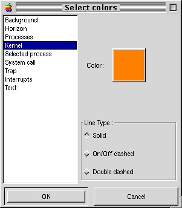

| Linux Trace Toolkit Reference Manual | |||
|---|---|---|---|
| <<< Previous Page | Home | Up | Next Page >>> |
Visual configuration of the event graph window is done through the Color selection window, as shown below:

Figure 1: The color selection window
The list on the left displays all configurable event graph components. Upon selection, the selected element's color and line type values will be updated on the right hand side. Clicking the color button will display the standard GTK+ color selection window, allowing you to select the color you wish to use for the configured element. The element's line type can also be changed, by selecting one of the following radio buttons:
| <<< Previous Page | Home | Up | Next Page >>> |
| Linux trace toolkit | Color selection window | ||